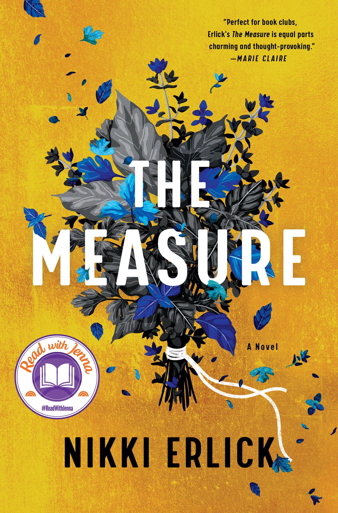

The Measure
- Read on 2023-08-31
- Rating: ️️️️️
- Format: 🎧 (10 hours 57 minutes)
An interesting story where people are able to find out exactly how long they'll live (by way of the length of a suddenly-appearing and personalized string), and how society reacts to this knowledge. The personal stories are engaging, and the variety of reactions to the knowledge is what the book is about. My brain could hardly handle the list of unanswered questions around the string itself. But the focus of the book was on the personal and societal stories, which were enjoyable.
- Prior: Aftermath
- Next: This Time Tomorrow